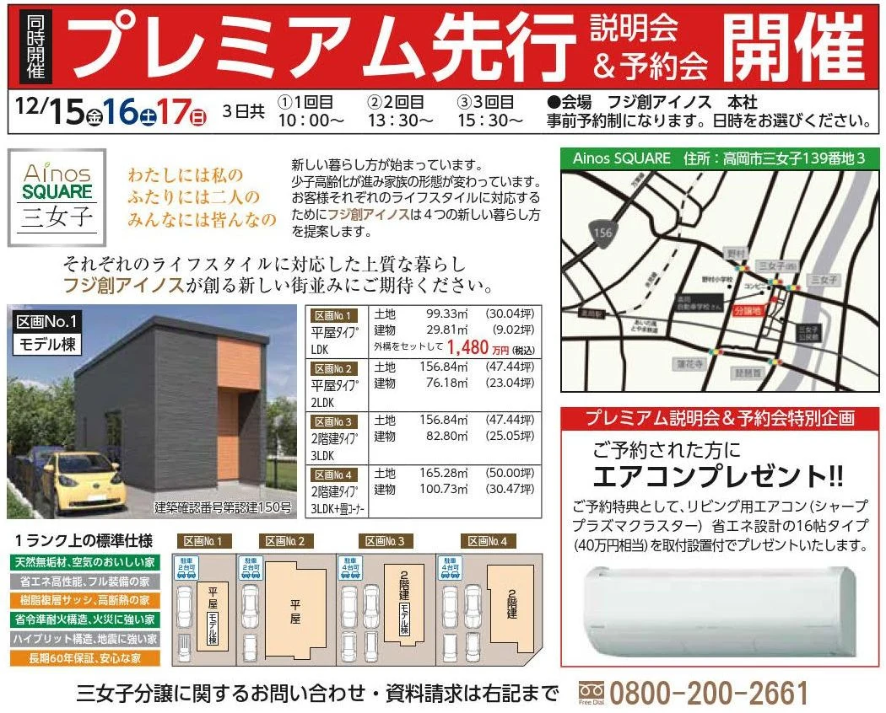

イベント情報
（終了しました）【AinosSQUARE三女子】先行説明会
詳しいご案内
日程・価格・募集内容などは、掲載当時の情報です。


◯「自然素材の家」が「幸せな住宅」の理由
住む人が「幸せ」であるためには、「健康」であることが大前提。
多くの家が、"新建材" と呼ばれる化学物質を含有した建材を使って建てられていますが、眼の刺激、のどの刺激、頭痛、疲労感など、多様な症状を訴える「シックハウス症候群」は、この化学物質が原因とされるデータが数多く報告されています。
安心して健康的な生活をしていただくために、漆喰や無垢材などの「自然素材」にこだわった家づくりをしています。

お申込み・お問合せ
- 有限会社フジ創
- 住所
- 富山県高岡市江尻846-1
- 電話
- 0800-200-2661(フリーダイヤル)
〇ご相談会随時受付中
ご予約フォームから「お問合せ内容」欄にご希望の日時をご入力ください。